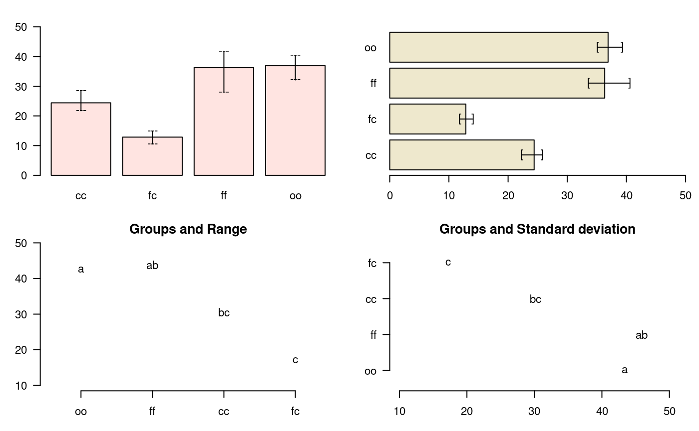

Graphics of the Multiple Comparisons with agricolae
Felipe de Mendiburu1, Muhammad Yaseen2
2020-04-27
Source:vignettes/GraphicsMultipleComparisons.Rmd
GraphicsMultipleComparisons.Rmd
- Professor of the Academic Department of Statistics and Informatics of the Faculty of Economics and Planning.National University Agraria La Molina-PERU.
- Department of Mathematics and Statistics, University of Agriculture Faisalabad, Pakistan.
Graphics of the multiple comparison
The results of a comparison can be graphically seen with the functions bar.group, bar.err and diffograph.
bar.group
A function to plot horizontal or vertical bar, where the letters of groups of treatments is expressed. The function applies to all functions comparison treatments. Each object must use the group object previously generated by comparative function in indicating that group = TRUE.
example:
# model <-aov (yield ~ fertilizer, data = field) # out <-LSD.test (model, "fertilizer", group = TRUE) # bar.group (out $ group) str(bar.group)
function (x, horiz = FALSE, ...) See Figure @ref(fig:f14). The Median test with option group=TRUE (default) is used in the exercise.
bar.err
A function to plot horizontal or vertical bar, where the variation of the error is expressed in every treatments. The function applies to all functions comparison treatments. Each object must use the means object previously generated by the comparison function, see Figure @ref(fig:f4)
# model <-aov (yield ~ fertilizer, data = field) # out <-LSD.test (model, "fertilizer", group = TRUE) # bar.err(out$means) str(bar.err)
function (x, variation = c("SE", "SD", "range", "IQR"), horiz = FALSE,
bar = TRUE, ...) variation
SE: Standard error
SD: standard deviation
range: max-min
\begin{figure} \begin{center}
oldpar<-par(mfrow=c(2,2),mar=c(3,3,2,1),cex=0.7) c1<-colors()[480]; c2=colors()[65] data(sweetpotato) model<-aov(yield~virus, data=sweetpotato) outHSD<- HSD.test(model, "virus",console=TRUE)
Study: model ~ "virus"
HSD Test for yield
Mean Square Error: 22.48917
virus, means
yield std r Min Max
cc 24.40000 3.609709 3 21.7 28.5
fc 12.86667 2.159475 3 10.6 14.9
ff 36.33333 7.333030 3 28.0 41.8
oo 36.90000 4.300000 3 32.1 40.4
Alpha: 0.05 ; DF Error: 8
Critical Value of Studentized Range: 4.52881
Minimun Significant Difference: 12.39967
Treatments with the same letter are not significantly different.
yield groups
oo 36.90000 a
ff 36.33333 ab
cc 24.40000 bc
fc 12.86667 cbar.err(outHSD$means, variation="range",ylim=c(0,50),col=c1,las=1) bar.err(outHSD$means, variation="IQR",horiz=TRUE, xlim=c(0,50),col=c2,las=1) plot(outHSD, variation="range",las=1)
Warning in plot.group(outHSD, variation = "range", las = 1): NAs introduced by
coercionplot(outHSD, horiz=TRUE, variation="SD",las=1)
Warning in plot.group(outHSD, horiz = TRUE, variation = "SD", las = 1): NAs
introduced by coercion
par(oldpar)
\end{center} \end{figure}
oldpar<-par(mfrow=c(2,2),cex=0.7,mar=c(3.5,1.5,3,1)) C1<-bar.err(modelPBIB$means[1:7, ], ylim=c(0,9), col=0, main="C1", variation="range",border=3,las=2) C2<-bar.err(modelPBIB$means[8:15,], ylim=c(0,9), col=0, main="C2", variation="range", border =4,las=2) # Others graphic C3<-bar.err(modelPBIB$means[16:22,], ylim=c(0,9), col=0, main="C3", variation="range",border =2,las=2) C4<-bar.err(modelPBIB$means[23:30,], ylim=c(0,9), col=0, main="C4", variation="range", border =6,las=2) # Lattice graphics par(oldpar) oldpar<-par(mar=c(2.5,2.5,1,0),cex=0.6) bar.group(modelLattice$group,ylim=c(0,55),density=10,las=1) par(oldpar)
plot.group
It plot groups and variation of the treatments to compare. It uses the objects generated by a procedure of comparison like LSD (Fisher), duncan, Tukey (HSD), Student Newman Keul (SNK), Scheffe, Waller-Duncan, Ryan, Einot and Gabriel and Welsch (REGW), Kruskal Wallis, Friedman, Median, Waerden and other tests like Durbin, DAU, BIB, PBIB. The variation types are range (maximun and minimun), IQR (interquartile range), SD (standard deviation) and SE (standard error), see Figure @ref(fig:f13).
The function: plot.group() and their arguments are x (output of test), variation = c(“range”, “IQR”, “SE”, “SD”), horiz (TRUE or FALSE), xlim, ylim and main are optional plot() parameters and others plot parameters.
\begin{figure} \begin{center}
# model : yield ~ virus # Important group=TRUE oldpar<-par(mfrow=c(1,2),mar=c(3,3,1,1),cex=0.8) x<-duncan.test(model, "virus", group=TRUE) plot(x,las=1)
Warning in plot.group(x, las = 1): NAs introduced by coercionplot(x,variation="IQR",horiz=TRUE,las=1)
Warning in plot.group(x, variation = "IQR", horiz = TRUE, las = 1): NAs
introduced by coercion
par(oldpar)
\end{center} \end{figure}
diffograph
It plots bars of the averages of treatments to compare. It uses the objects generated by a procedure of comparison like LSD (Fisher), duncan, Tukey (HSD), Student Newman Keul (SNK), Scheffe, Ryan, Einot and Gabriel and Welsch (REGW), Kruskal Wallis, Friedman and Waerden, , see Figure @ref(fig:f5)
\begin{figure} \begin{center}
# function (x, main = NULL, color1 = "red", color2 = "blue", # color3 = "black", cex.axis = 0.8, las = 1, pch = 20, # bty = "l", cex = 0.8, lwd = 1, xlab = "", ylab = "", # ...) # model : yield ~ virus # Important group=FALSE x<-HSD.test(model, "virus", group=FALSE) diffograph(x,cex.axis=0.9,xlab="Yield",ylab="Yield",cex=0.9)

\end{center} \end{figure}